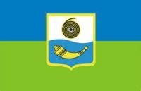

Епічний вступ
Привіт. Мене звуть Денис,мене можна впізнати за ім'ям Frank в чаті Discord. Знак зодіаку:Водолій
Мені вже 34 рочки і, коли я згадую свій вік, деякі дівчата кажуть, що "я вже застарий".
Нічого, окрім посмішки, ці висловлювання у мене не викликають))) Деякі мої однолітки, нажаль, не дожили до
цих
днів або загинули на війні.
Народження
Народився в місті Шостка , Сумської області - це поряд з м.Глухів, колишньою столицею Гетьманщини. Місто не велике, але в ньому присутній свій дух та свої традиції.
Навчання
Після школи, вступив до інституту ім. Миколи Гоголя в м. Ніжин на факультет англійської мови на заочну форму. То були славні, безтурботні, алкогольно-рок-н-рольні часи, які мені привели до самодисципліни та усвідомлення відповідальності за своє життя та свої вчинки. Про IT я тоді чув, мій однокласник Вовчик, який дуже класно шарив в математиці, а в англійській ніяк, пішов вчитися в академію поліції на факультет кібербезпеки і мені здавалося, що IT може осилити лише математичний склад розуму, тому це для мене здавалося складним.
Осмислення
Але все змінює 2019 рік - рік, коли всі дізналися, що існує такий вірус, як COVID. І перші мої пошуки приводять мене до SEO. Мій друг Євген - senior SEO specialist, агітує мене приєднатися до його команди та починати вчити просування сайтів. Я дивлюсь курси по SEO і там була тема про HTML теги, але дуже поверхнево. Я вирішую поглибити свої знання, починаю дивитися курс на ютубі,практикуюсь, закидую свої спроби, потім знову починаю і так декілька раз. Одного разу,зупинившись на темі "Background", вирішую пошукати інфу в ютубі і натрапляю на розгорнуте відео від Фрілансера По Життю. Так і трапляється моє знайомство з магією верстки. Тепер я тут, на цьому курсі, разом з багатьма людьми.
Хоббі
- Англійська мова
Я вивчаю англійську і люблю дивитись фільми в оригіналі. В цьому є своя магія і свій кайф. Ти чуєш справжній голос актора і його емоції. Переважно дивлюсь фільми на Netflix:дешево і сердито. Якщо щось не розумієш, то завжди можеш використати субтитри.
- Фізкультура
Сьогодні, живучи в динамічному світі і маючи всі досягнення цивілізації, дуже складно стримати себе від
різних видів спокус та згубних звичок.
Здоровий спосіб життя стає мейнстрімом, та чи багато Ваших знайомих його дотримуються?
Я назвав цей розділ "Фізкультура", тому що поняття "Спорт" - це профессійний термін і він вимагає великих
зусиль.
Я не ходжу в зал, тому що я звик тренуватись без залу.
Виконую базові вправи зі своєю вагою. Влітку відвідую спортивні майданчики.
Вважаю, що кожна людина, не залежно від віку, повинна займатися фізкультурою - це профілактика багатьох
сердцево-судинних хвороб та запорука гарного здоров'я.
- Музика
Обожнюю классичний рок та живі концерти. Серед моїх друзів є профессійні музиканти, я багато раз бував на репетиціях і бачив на власні очі їх працю. Це дуже складна робота, яку вони виконують. Головна умова успіху - не втратити натхнення та стійкість, бо часто люди йдуть в "забухи" та втрачають сенс життя.